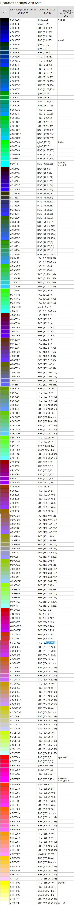

Безопасные цвета или, по-другому, web-палитра были созданы для согласования браузеров. Раньше, когда компьютеры и мониторы не могли отображать необходимое количество оттенков, разработчики очень беспокоились о несоответствии. Они волновались, что их странички будут неодинаково хорошо смотреться в разных браузерах и мониторах. Старые устройства вывода ограничивали деятельность разработчиков. Поэтому для безопасности и сохранности исходного вида интернет-страниц и были придуманы веб-цвета.
Как известно, html и css используют несколько способов для определения значения цвета. Большинство веб-разработчиков используют специальные RGB-коды, в которых указывается индивидуальный номер оттенка. Например, такая запись: «#223366» означает, чтобы было взято 22 – красного, 33 – зеленного и 66 – синего. Последнее значение находится в преобладающем количестве. И если смешать в таких пропорциях краски, то получится темно синий цвет. RGB является сокращением от английских слов Red, Green и Blue. И именно эти цвета были выбраны для аддитивной цветовой модели, с помощью которой и происходит синтез красок. Некоторые предполагают, что безопасные цвета html были назначены наугад. Но это не так. Выбор происходил при помощи сухого математического расчета. Были выбраны только те значения, которые делятся на 3 и которые имеют пару одинаковых цифр. Например: "# 663366" или "#cc0099" (где с означает 13). А такие цвета, как "#ff66d6" или "#9999AA" уже не относятся к безопасным цветам, так как нарушают основные правила. Если монитор встречал неизвестный ему оттенок, то он пытался заменить его или создать новую краску. Чаще всего использовалась система дитеринг, в которой происходило смешивание цветов с целью создания другого. Иногда такой способ помогал избежать необратимых последствий неправильного отображения, но бывали случаи, когда картина сайта полностью менялась. Именно поэтому была создана отдельная палитра цветов, которая имела полное согласование с устройствами и браузерами того времени.
Как вы, наверное, уже поняли, безопасные цвета для сайта выглядят очень скудно, так как нет большого многообразия оттенков и переливов. Но во времена использования старых мониторов такая палитра была единственным выходом для получения одинакового отображения картинки на разных устройствах. Сейчас использовать безопасные цвета нет необходимости, ведь практически у каждого пользователя интернета стоит современное оборудование, которое с легкостью производит уже все известные оттенки. Сайты выглядят очень скудно, если использовать только веб-палитру. Некоторые графические редакторы (например Adobe Photoshop) до сих пор оставляют возможность подбора только безопасного цвета. Но прогресс не стоит на месте, и каждый год в сфере программирования появляется что-нибудь новое.
Использовать безопасные цвета сегодня уже не имеет смысла. Практически все старые мониторы заменены на новые. Поэтому безопасные цвета уже уходят в историю и вскоре полностью исчезнут из всех программ и интернет-страничек.
Таблица
